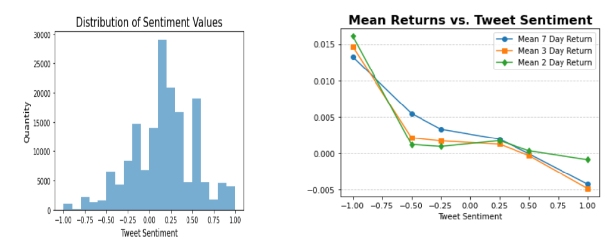

Derrick Gan
Student
About Me
Hi! My name is Derrick Gan and I'm a 4th year at Northeastern University. I am currently a Bachelors of Science candidate in Data Science and Business Administration (Concentration in Finance) and a minor in Psychology. I'm from Foster City, California and have lived in the Bay Area for my whole life. In school, I'm involved with the TAMID Group where I work with startups on developing software and data analysis solutions. I'm also involved on the Northeastern Men's Club Basketball team where I play the guard position. Outside of school I love to read, go to the gym, learn about investing, and explore Boston with friends. My goal is to leverage my education and experience to pursue a career in data science, finance, consulting, or software development, where I can apply my passion, creativity, and curiosity to solve real-world problems and create value for society. I am always eager to learn new skills, technologies, and methodologies, and to challenge myself with diverse projects. I am committed to working with integrity, professionalism, and excellence, and to making a positive impact on the people and organizations I work with.

Resume
* Last updated Jan 2026
Portfolio
I have worked on a wide range of projects using languages like Python and SQL to explore my interests in the world of sports and finance. Here are a couple of them below. I hope you find them as interesting and fun as I did while working on them!
NBA Athlete Performance Study
In this project, I chose to analyze the performance of athletes as they age over time in their athletic careers. My main question was whether experience or youthfulness is the key to performance. This question is quite relevant to the modern basketball scene, where new incoming talent is projected to grow and surpass the older and experienced veterans of the sport. The data scope of this project spanned multiple seasons and athletes of the NBA, with data derived from the NBA itself. It followed both athletes that have played for several seasons and those that have had a brief career.
 View on GitHub
View on GitHub
KeyBase
Keybase allows different users to do different things in terms of updating account security, or searching for something that they would like to look for if they were one of our different users. In our original wireframes, we planned to edcuate others about the importance of having good account security by linking our buttons to external websites, but we were not able to do this in our appsmith for the sake of simplicity. As growing adults, we have more responsibilities and need to make sure that we are able to update our information regularly in order to stay on top of things. I created this project to give myself an introduction to new technologies, as well as see how databases store and update information.
View on GitHubStock Sentiment Analysis
For the past few decades, the world has become increasingly connected through technology. Within it, social media has expanded beyond its message-sharing origins to become a prominent source of influence in many other spheres. Social media's potential to bear influential power over the financial markets was notably demonstrated during the Reddit-induced January 2021 GameStop and AMC share price fiascos, leading to the coining of the term “meme stock.” However, publicly traded companies are discussed all of the time on social media. Even when not on the scale of the Gamestop and AMC situation, social media-induced decisions of buying, holding, and selling are entirely possible. The question I tried to answer was: How much power does social media really have over the stock market? How can something as regulated, technical, and concrete as the financial markets be influenced by something as simple as a social media post?
 View on GitHub